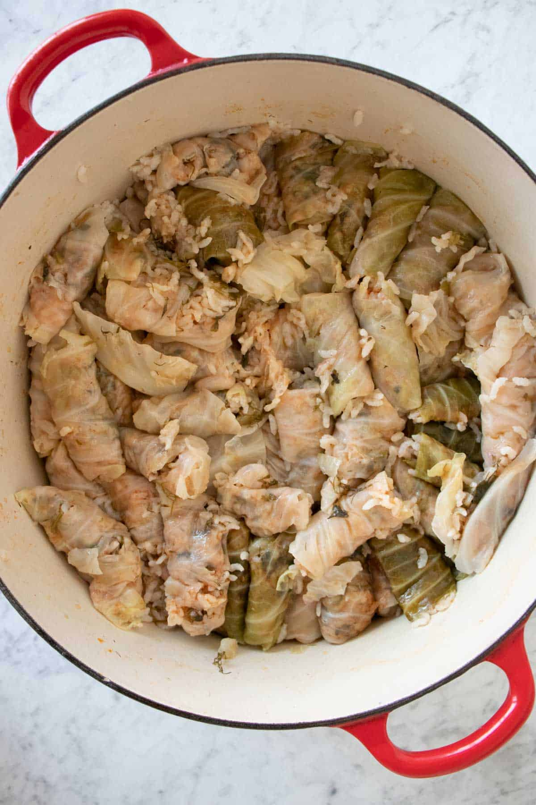

Ingredients
- Fresh Tomatoes: Any type of tomato will work for this recipe except grape tomatoes.
- Onions: I recommend using white onions, sweet onions, or brown onions.
- Rice: I recommend medium-grain rice or Calrose rice.
- Herbs: This recipe calls for fresh parsley, cilantro, and dill. All of these herbs are crucial for getting the flavor right. I don't recommend using dried herbs.
- Tomato paste: Any type of tomato paste will work.
- Cabbage: I recommend round cabbage for this recipe.
Steps
- Prepare the Cabbage Leaves. Core out the center of the head of cabbage. In a boiled pot of water, slowly lower the cabbage.
- Peel off the leaves one by one and set them aside.
- Fry the onions. In a food processer, blend up 2 onions. Pan-fry the onions on medium-high heat with 3 tablespoon of olive oil for about 10 minutes
- Make the homemade tomato sauce. Blend 6 tomatoes in a blender and strain into a bowl. Add the strained tomato puree, 1 tablespoon of tomato paste, and 1 bouillon cube to the onion mixture. Add salt and pepper to taste. Cook for 10 minutes covered.
- Make the rice stuffing. Chop 1 cup each of parsley, cilantro, and dill into fine pieces. Add herbs to the tomato mixture. Add rice and continue to cook for 5 minutes on low heat covered. The rice will only be semi-cooked at the stage which is what we want. It will continue cooking once we add the broth. Allow the rice to cool off.
- Roll The Cabbage Leaves:
Take the cooked cabbage leaves, and cut out the stem. Cut the cabbage leaf into a triangle shape that has about 3" sides. For the larger cabbage leaves, you will be able to make 3 smaller leaves.
- Put about 1 tablespoon of rice stuffing on the cabbage leaf. Roll the leaf by tucking in the sides.
- Layer The Rolled Cabbage Leaves:
Put a layer of cabbage stems and small cabbage leaves on the bottom of the pot. You can add any vegetables at your disposal. Layer the stuffed cabbage leaves in a circular pattern going row by row. Place the seam of the cabbage leaf down. This helps the leaves from unraveling. Once you have finished layering the rolled cabbage leaves. Slice some spicy pepper and spread on top.
- Cook the Stuffed Cabbage Leaves:
Heat up the broth in a separate pot. Add the boiling broth to the stuffed cabbage leaves, fully covering the leaves. If you have a plate that can fit in the pot, turn it upside down and lay it on top of the rolled cabbage leaves. The plate keeps the cabbage rolls from unraveling while cooking.
Cover and cook on medium-high heat for 10 minutes. Crack the lid and continue to cook for another 15 to 20 minutes or until the rice is fully cooked. You might experience some rice escaping if the rolls aren't tight enough. It will still taste gloriou